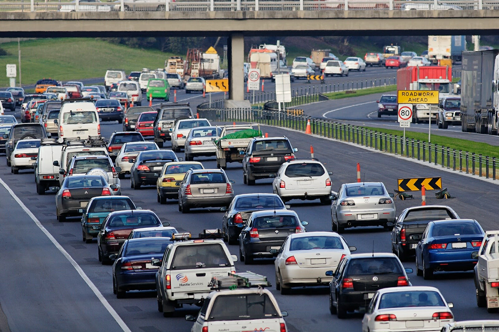
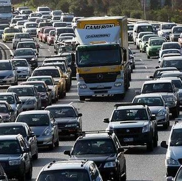
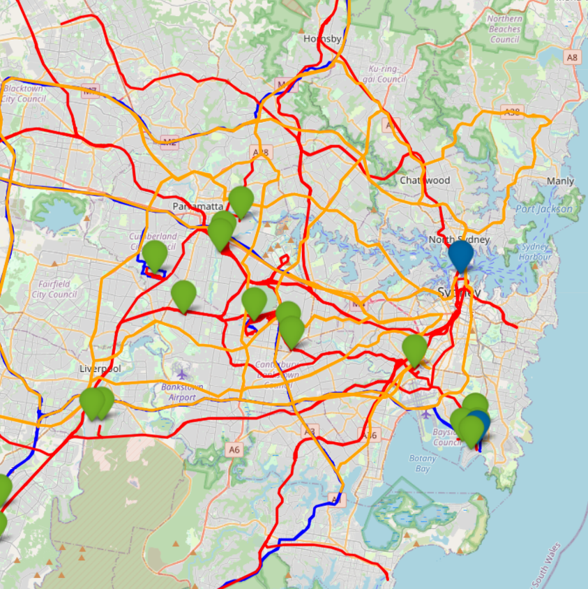

Yet, due to commercial sensitivities and a scarcity of accessible data
the precise logistics and planning that underpin route selection for transporting freight from Point A to Point B remain largely unknown Our analysis of traffic and demand patterns, however, reveals a striking insight:
Freight is often shipped simultaneously in peak traffic hours resulting in

Road congestion

Elongated travel times
Increased fuel costs
This lack of coordination translates to lost productivity, costing the Australian economy an estimated $16.5 billion annually. At Open Freight, we are committed to fostering transparency in this crucial sector.Our mission is to open-source the freight data, equipping freight operators with the essential information and tools they need to collaborate effectively and optimise their routes. Together, we are paving the way towards a more efficient and sustainable future for Australian freight.